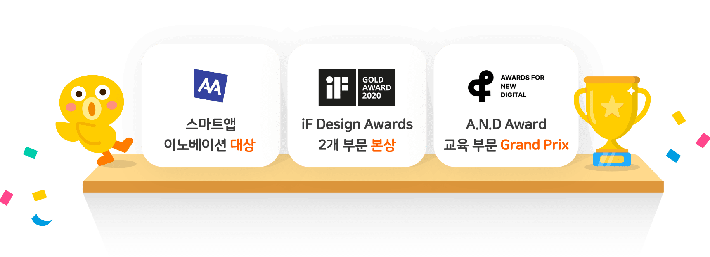
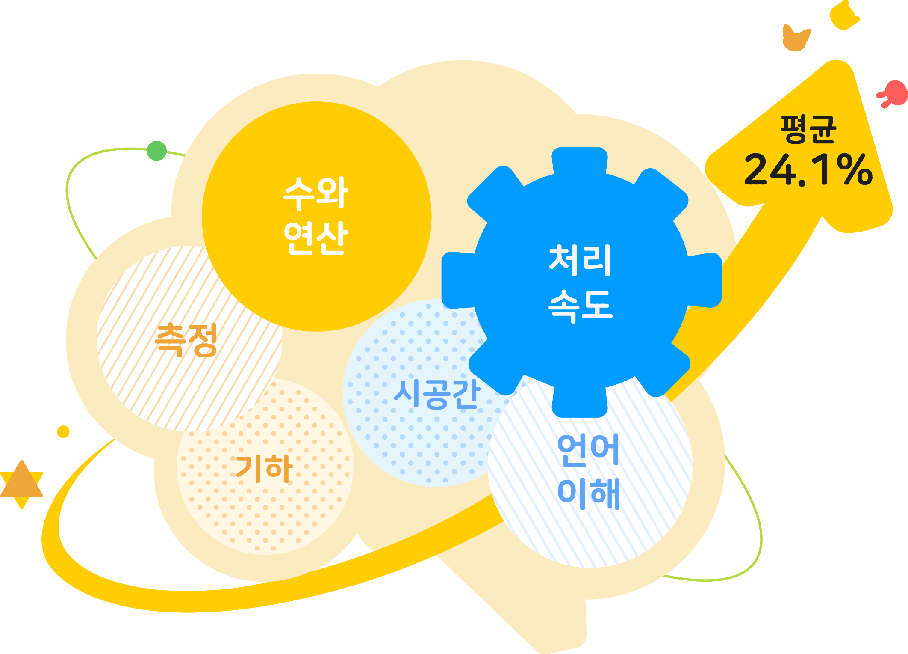

먼저 써본
부모님이
추천하는 앱

하루 15분, 우리 아이가 똑똑해집니다
유아 수학·인지 능력의 향상을 확인하였습니다.
어떻게 연구했나요?
쥬니버스쿨은 이렇게 구성되어 있습니다
- 그림1
아이의 발달 수준에 맞춘 세분화된 레벨로
학습 콘텐츠를 제공합니다. - 그림2
하루 15분 분량의오늘의 미션,
모든 미션을 자유롭게 선택할 수 있는전체보기 모드로
원하는 방법으로 학습하세요. - 그림3
보호자페이지에서 아이의 학습 결과는 물론,
집에서 실천해 볼 수 있는 학습 지도 TIP도 확인할 수 있어요! - 그림4
네이버 계정만 있으면별도의 기기 대여 없이사용 가능합니다.
하나의 계정에 여러 아이를 등록할 수도 있어요. - 그림5
콘텐츠 제한 설정기능으로
아이의 앱 사용 시간을 스마트하게 약속하세요.
함께 만드는 전문가
공감 능력과 사회성, 의사 소통 능력은
타인과 더불어 사는 세상에서 갖춰야 할 필수 역량으로
유아기부터 올바른 학습과 훈련이 매우 중요합니다.
쥬니버스쿨은 인지적인 부분과 함께 사회-정서적인 부분도
고려하여 섬세하게 기획되었습니다.
-
천근아 교수
-
세브란스병원 소아정신과장,
연세대학교 의과대학 저인과학교실
유아 시기에는 지식위주의 학습보다 배움에 대한 즐거움, 흥미,
자신감을 가질 수 있게 하는 것이 더 중요합니다.
쥬니버스쿨은 모든 콘텐츠와 피드백 시스템은 아이들의 흥미를
잃지 않고 배움을 지속할 수 있도록 설계했습니다.
-
조형숙 교수
-
중앙대학교 유아교육학과
유추 능력, 공간 인지 등의 사고력 발달은 미래의 학업적 성취와
STEM(Science, Technology, Engineering, and
Mathematics)분야의 성공을 예측하는 중요한 요소 중
하나입니다.
쥬니버스쿨을 통해 유아들이 이러한 사고력을 기를 수 있도록
교육 과정을 기획했습니다.
-
박유정 교수
-
서울대학교 아동가족학과
앞으로 20년동안 지금 우리가 알고 있는 직업의 태반이 없어질
것이라는 이야기 들어보셨나요? 더 이상 부모가 알고 있는 지식과
경험을 강요할 수 없는 세상이 되었습니다.
쥬니버스쿨의 실험실은 아이들의 호기심을 가지고 우리가 살고
있는 세계를 살펴보고 생각해 볼 수 있게 도우며, 다양한 분야의
문제를 해결해 볼 수 있는 경험을 제공합니다.
-
이정모 전 관장
-
국립과천과학관